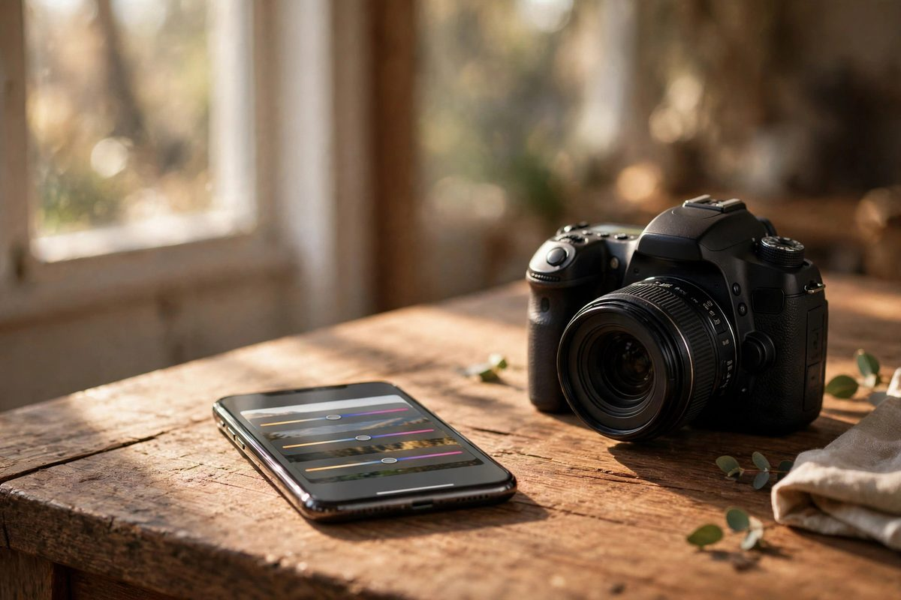
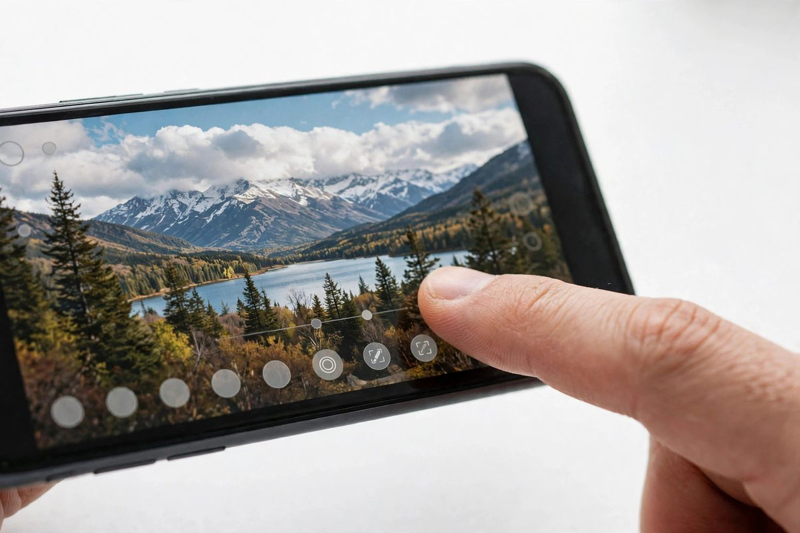
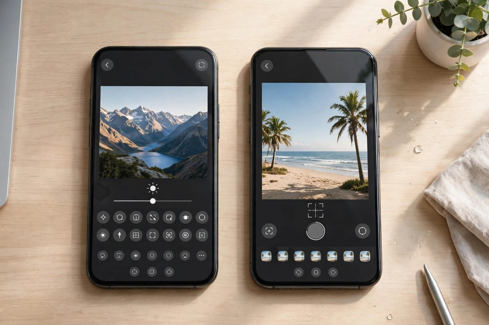

Edit photos like a pro — on your phone.
Step-by-step Lightroom tutorials, preset guides, and free in-browser tools. Learn what Lightroom Premium really offers, how to edit portraits, landscapes and night shots, and what to know before trusting any "mod APK".
Browse the guidesTry the preset simulatorDownload the official app:
Free Photo Tools
Run entirely in your browser. Nothing is uploaded or stored.
Preset Simulator
Preview popular Lightroom preset looks on a sample photo — warm, cool, vintage, black and white and more.
Open toolExposure Triangle Explainer
Move the aperture, shutter and ISO sliders and see how exposure, depth of field and motion blur change.
Open toolAspect Ratio & Crop Calculator
Work out the largest crop for Instagram, print or wallpaper from any photo size, and what resolution remains.
Open toolPhoto Export Size Calculator
Estimate JPEG, PNG and TIFF file sizes before you export, and check print size at 300 DPI.
Open toolLatest Guides
20 original guides — from your first edit to advanced color grading.

What Is Lightroom Mod APK?
What a "mod APK" is, how it differs from the official app, and what it claims to unlock.
Read guide
Lightroom Premium vs Free: What Do You Actually Get?
Free vs premium compared side by side — healing brush, masking, batch editing, cloud storage and presets.
Read guide
Is Lightroom Mod APK Safe? The Honest Risks
Malware, stolen data, account bans, missing updates and legal risks — explained honestly, plus the safe alternative.
Read guide
How to Install Lightroom Officially on Android and iPhone
Install the official Adobe Lightroom app safely from Google Play and the App Store, step by step.
Read guideBest Lightroom Presets in 2026
The best presets in 2026 for portraits, travel, food and film looks — and how to choose a preset pack.
Read guideHow to Use Presets in Lightroom Mobile
Install, apply, adjust and save your own presets — and fix the common problems presets cause.
Read guide
Portrait Editing Tutorial: Lightroom Mobile Step by Step
Exposure, skin tones, eyes, background and a natural finished look — a full portrait workflow.
Read guide
Landscape Editing Tutorial for Lightroom Mobile
Recover skies, balance light, add depth and make mountains, lakes and sunsets look their best.
Read guide
Color Grading Basics in Lightroom Mobile
Color wheels, split toning and HSL sliders — build a consistent look for your photos.
Read guide
Healing Brush Guide: Remove Distractions in Lightroom
Remove spots, wires, people and clutter with the healing brush — with tips for clean, invisible edits.
Read guide
Masking Tutorial: Selective Edits in Lightroom Mobile
Subject, sky and background masks explained — edit one part of a photo without touching the rest.
Read guideBest Export Settings in Lightroom Mobile
File type, quality, dimensions and color space for Instagram, printing and backup.
Read guide
Batch Editing Guide: Edit Hundreds of Photos Fast
Copy and paste settings, sync edits across photos and build a fast workflow for events and travel.
Read guide
Lightroom vs Snapseed: Which Photo Editor Wins?
Editing power, presets, RAW support, ease of use and price — pick the right free editor.
Read guideLightroom vs Picsart: Editing Power vs Creative Fun
Serious photo editing against creative stickers, collages and effects. Which app fits your style?
Read guideBest Lightroom Settings for Instagram Photos
Crop, sharpness, color and export settings that keep your feed looking sharp and consistent.
Read guideNight Photo Editing in Lightroom Mobile
Reduce noise, rescue shadows, fix city lights and keep stars and neon looking natural.
Read guide
Skin Tone Editing: Natural Results in Lightroom
Fix color casts, even out tones and keep skin looking natural across every skin tone.
Read guide
Lightroom for Beginners: Your First Edit
Your first edit from import to export, the five sliders that matter most, and mistakes to avoid.
Read guide
Lightroom Premium Features Explained
Every premium feature explained — healing brush, masking, batch editing, cloud sync and geometry tools.
Read guideAbout This Site
Lightroom APK Guide is an independent, free resource for mobile photographers. Every guide is written to help you edit better photos with the official Adobe Lightroom app — and to give you honest, plain-language answers about the modified "mod APK" versions circulating online, including their risks. We are not affiliated with Adobe, and we do not provide or link to any APK files. All tools on this site run entirely in your browser; your photos and edits never leave your device.